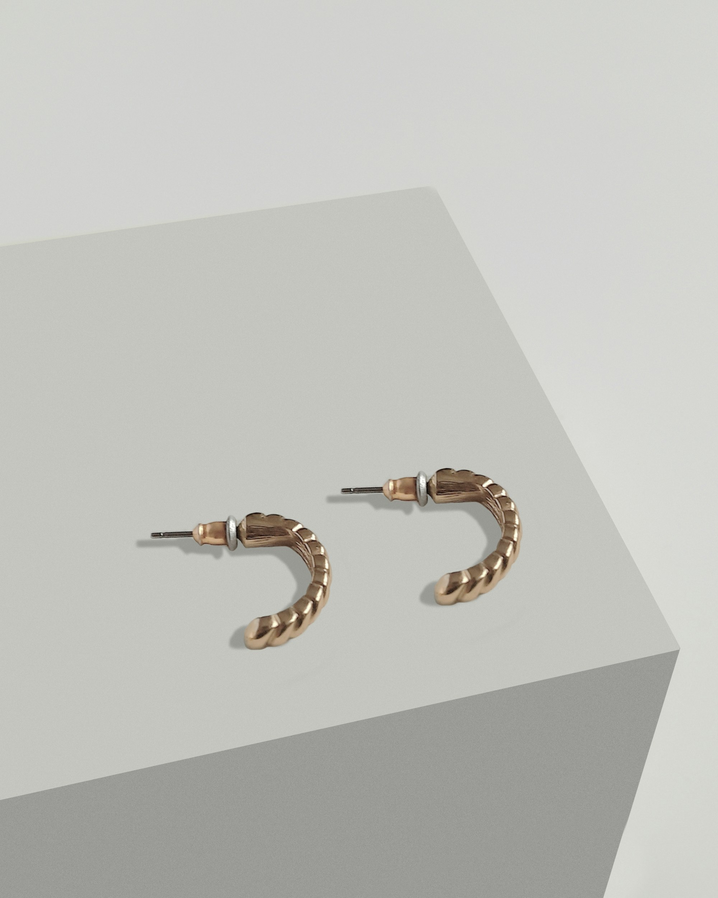
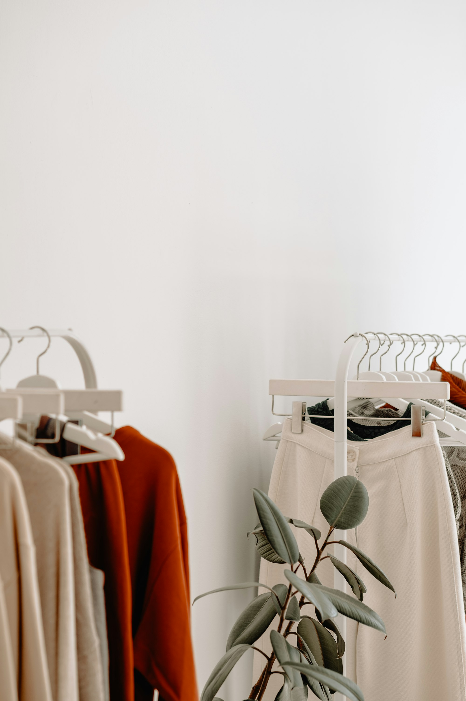

Sortiment
Kuratierte italienische Damenmode
Von eleganter Tageskleidung bis zu Accessoires mit Charakter: moda e arte wählt Marken und Looks persönlich aus und stellt sie in wechselnden Saisonwelten zusammen. Sortiment und Verfügbarkeit wechseln saisonal.
Marken
HIGHDamenmode
Matilda LonghenaDamenmode
PESERICODamenmode
TANDEMDamenmode
TRANSITDamenmode
BALDININISchuhe
CASHMERE BLUESTücher aus Nepal
Marjana von BerlepschSchmuck
Kategorien
Mode, Schuhe, Tücher, Schmuck
Jede Kategorie wird bewusst klein und hochwertig gehalten — passend zur persönlichen Beratung vor Ort statt zur großen Auswahl im Regal.
- Damenmode
- Schuhe
- Tücher & Schals
- Schmuck
- Der.SEEHAS Produkte


Individuell
Nicht sicher, was zu Ihnen passt?
Die aktuelle Kollektion zeigt sich am besten im persönlichen Gespräch — mit Blick auf Farbe, Schnitt und Anlass. Vereinbaren Sie einen Beratungstermin oder schauen Sie spontan in der Neugasse 33 vorbei.